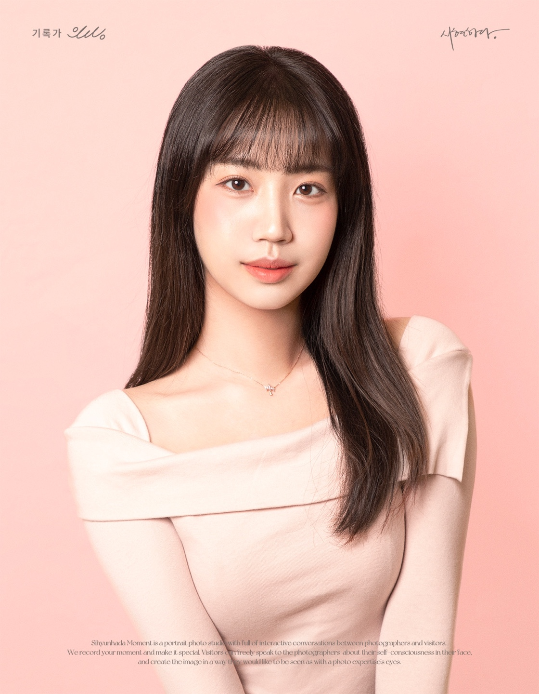
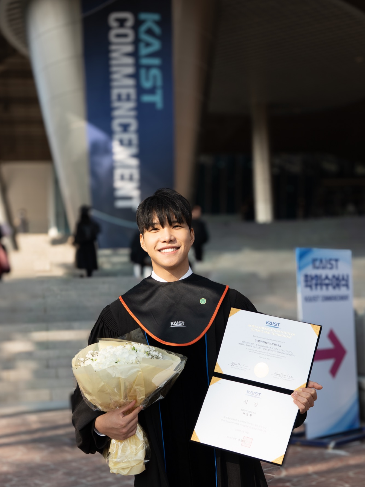
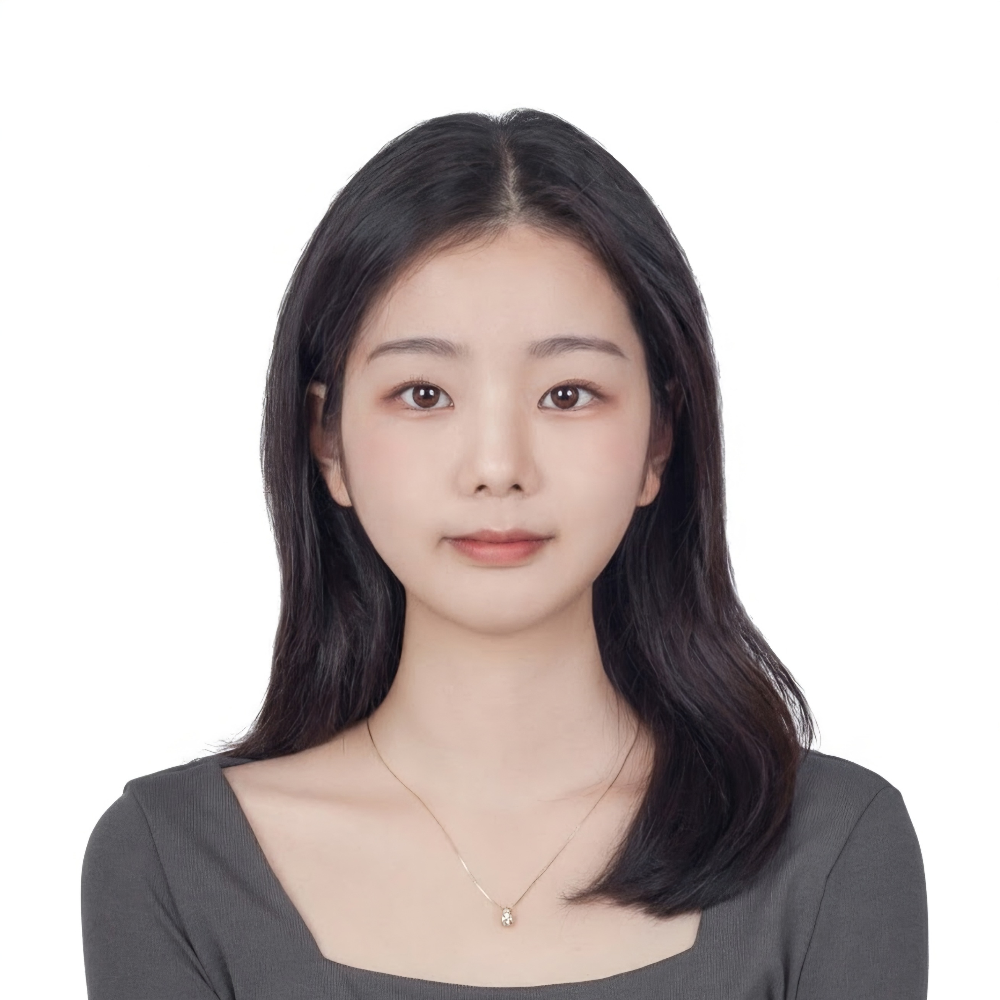

YL
이영익 (Youngik Lee)
Quantitative Marketing
Agentic AI
AI Transformation
I am a Ph.D. student in Management Engineering (Quantitative Marketing) at KAIST. My research examines how AI and digital technologies shape consumer behavior and market outcomes using econometric, experimental, and computational methods.
최민서 (Minseo Choi)
Information Economics
Behavioral & Experimental Economics
I am an applied theorist who also runs experiments. My research focuses on information design and information provision experiments, especially how people acquire and process information. I apply this approach to questions in industrial organization, political economy, and the economics of media.
SH
이수현 (Suhyeon Lee)
Generative AI & Platforms
AI Agents & Delegation
LLM-based Simulation
Research details available via links below.
오정민 (Jeongmin Oh)
Quantitative Marketing
Data-driven Analysis
B2B/B2G Analytics
Synthetic Respondent Simulation
Sovereign AI
Quantitative marketing & data-driven simulation modeling.

김주현 (Juhyeon Kim)
Quantitative Marketing
Data-driven Analysis
Causal Inference & Causal ML
AI Agent
Customer Targeting
E-commerce Platform
Research details available via the link below.

박영환 (Younghwan Park)
Empirical Asset Pricing
Market Microstructure
I am an integrated MS-PhD student in Finance at KAIST. My research focuses on empirical asset pricing and market microstructure, with a particular interest in how trading and information environments shape asset prices.

이유정 (Yujeong Lee)
Health Economics
Behavioral & Experimental Economics
I am an M.S.-Ph.D. student in Management Engineering at the Korea Advanced Institute of Science and Technology (KAIST). My primary research interest is in applied microeconomic theory, particularly in health economics and industrial organization. I am interested in studying individual decision-making and strategic interactions, and in using experiments to complement theoretical analysis and explore their implications for markets and public policy.
전현진 (Hyunjin Jeon)
Behavioral & Experimental Economics
Industrial Organization
Competition Policy
I am a public policy PhD student specializing in competition policy. My research uses laboratory experiments to study firm behavior, particularly how collusion forms and sustains itself and how firms use price discrimination. I am interested in what these findings imply for antitrust and competition regulation.
김상훈 (Sanghun Kim)
Market Microstructure
Behavioral Finance
Prediction Market
I am an empirical asset pricing researcher whose work lies at the intersection of asset pricing and market microstructure. My research focuses on how information is aggregated, transmitted, and incorporated into prices, especially in prediction markets and high-frequency markets. I apply this approach to questions involving price discovery, political connection, liquidity, and risk premia.
김승혁 (Seunghyuk Kim)
Quantitative Marketing
Causal Inference
I am a Master’s student in Marketing at the Korea Advanced Institute of Science and Technology (KAIST). Currently, I am researching the market impact of last-mile logistics innovations, focusing on their positive effects within real-world environments.